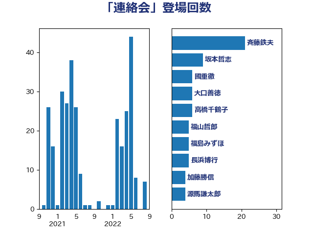

単語「連絡会」

| 斉藤鉄夫 | 公明党 | 21 回 |
| 坂本哲志 | 自由民主党 | 9 回 |
| 國重徹 | 公明党 | 6 回 |
| 大口善徳 | 公明党 | 6 回 |
| 高橋千鶴子 | 日本共産党 | 6 回 |
| 福山哲郎 | 立憲民主党 | 5 回 |
| 福島みずほ | 社会民主党 | 5 回 |
| 長浜博行 | 無所属 | 5 回 |
| 加藤勝信 | 自由民主党 | 4 回 |
| 源馬謙太郎 | 立憲民主党 | 4 回 |
| 田村まみ | 国民民主党 | 4 回 |
| 田村憲久 | 自由民主党 | 4 回 |
| 石橋通宏 | 立憲民主党 | 4 回 |
| 足立康史 | 日本維新の会 | 4 回 |
| 本村伸子 | 日本共産党 | 3 回 |
| 東徹 | 日本維新の会 | 3 回 |
| 林芳正 | 自由民主党 | 3 回 |
| 菅義偉 | 自由民主党 | 3 回 |
| 金城泰邦 | 公明党 | 3 回 |
| 鈴木貴子 | 自由民主党 | 3 回 |
| 上川陽子 | 自由民主党 | 2 回 |
| 中野洋昌 | 公明党 | 2 回 |
| 伊波洋一 | 無所属 | 2 回 |
| 倉林明子 | 日本共産党 | 2 回 |
| 塩田博昭 | 公明党 | 2 回 |
| 山井和則 | 立憲民主党 | 2 回 |
| 後藤茂之 | 自由民主党 | 2 回 |
| 田村智子 | 日本共産党 | 2 回 |
| 竹内譲 | 公明党 | 2 回 |
| 笠井亮 | 日本共産党 | 2 回 |
| 若宮健嗣 | 自由民主党 | 2 回 |
| 赤羽一嘉 | 公明党 | 2 回 |
| 野上浩太郎 | 自由民主党 | 2 回 |
| 長島昭久 | 自由民主党 | 2 回 |
| 青山大人 | 立憲民主党 | 2 回 |
| おおつき紅葉 | 立憲民主党 | 1 回 |
| たがや亮 | れいわ新選組 | 1 回 |
| 三浦信祐 | 公明党 | 1 回 |
| 上野通子 | 自由民主党 | 1 回 |
| 中西祐介 | 自由民主党 | 1 回 |
| 井上信治 | 自由民主党 | 1 回 |
| 伊藤孝江 | 公明党 | 1 回 |
| 伊藤岳 | 日本共産党 | 1 回 |
| 佐々木紀 | 自由民主党 | 1 回 |
| 加藤鮎子 | 自由民主党 | 1 回 |
| 古川禎久 | 自由民主党 | 1 回 |
| 吉良よし子 | 日本共産党 | 1 回 |
| 和田義明 | 自由民主党 | 1 回 |
| 堀内詔子 | 自由民主党 | 1 回 |
| 大島敦 | 立憲民主党 | 1 回 |
| 小泉進次郎 | 自由民主党 | 1 回 |
| 小熊慎司 | 立憲民主党 | 1 回 |
| 山崎誠 | 立憲民主党 | 1 回 |
| 山添拓 | 日本共産党 | 1 回 |
| 山谷えり子 | 自由民主党 | 1 回 |
| 岸真紀子 | 立憲民主党 | 1 回 |
| 平木大作 | 公明党 | 1 回 |
| 日下正喜 | 公明党 | 1 回 |
| 早稲田ゆき | 立憲民主党 | 1 回 |
| 朝日健太郎 | 自由民主党 | 1 回 |
| 杉久武 | 公明党 | 1 回 |
| 東国幹 | 自由民主党 | 1 回 |
| 松島みどり | 自由民主党 | 1 回 |
| 梶山弘志 | 自由民主党 | 1 回 |
| 武井俊輔 | 自由民主党 | 1 回 |
| 河野義博 | 公明党 | 1 回 |
| 津島淳 | 自由民主党 | 1 回 |
| 浜野喜史 | 国民民主党 | 1 回 |
| 清水真人 | 自由民主党 | 1 回 |
| 片山さつき | 自由民主党 | 1 回 |
| 田村貴昭 | 日本共産党 | 1 回 |
| 白石洋一 | 立憲民主党 | 1 回 |
| 矢倉克夫 | 公明党 | 1 回 |
| 石井啓一 | 公明党 | 1 回 |
| 石井浩郎 | 自由民主党 | 1 回 |
| 石井苗子 | 日本維新の会 | 1 回 |
| 稲津久 | 公明党 | 1 回 |
| 穀田恵二 | 日本共産党 | 1 回 |
| 美延映夫 | 日本維新の会 | 1 回 |
| 葉梨康弘 | 自由民主党 | 1 回 |
| 西村康稔 | 自由民主党 | 1 回 |
| 近藤昭一 | 立憲民主党 | 1 回 |
| 阿部弘樹 | 日本維新の会 | 1 回 |
| 鰐淵洋子 | 公明党 | 1 回 |